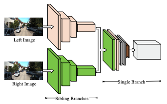

Arjun Ashok Rao
The Chinese University of Hong Kong
|
The Chinese University of Hong Kong #330, CW Chu College. N.T, Hong Kong SAR |
|
| arjunrao@link.cuhk.edu.hk |
About Me
I am a penultimate year undergraduate student at The Chinese University of Hong Kong majoring in Financial Technology and Data Analytics.
Research Interests: Adversarial Machine Learning, Stereo Vision. I am also interested in studying ML from a robustness perspective, and understanding adversarial examples.
As of August 2020, I’m working at the Chinese University of Hong Kong as an Undergraduate Research Intern under Professor Bei Yu, where our work includes studying stereo vision from an adversarial robustness perspective.
I’ve worked as a research intern at Asiabots, where I was tasked with work on latent-space comprehension in Variational Autoencoders applied to Asiabot’s Voice AI department. I had my first exposure to research at LSCM R&D Centre during my undergraduate freshman year where I learnt about sequence models for neural machine translation.
Recent News
-
July 2020
I have been accepted as a Microsoft Learn Student Ambassador (Formerly known as Microsoft Student Partner) -
May 2020
I have begun an undergraduate research internship at The Chinese University of Hong Kong under the supervision of Professor Bei Yu at the department of Computer Science and Engineering. Our work is focussed on studying stereo vision and stereo rectification algorithms.
Conference Papers
|

|
|